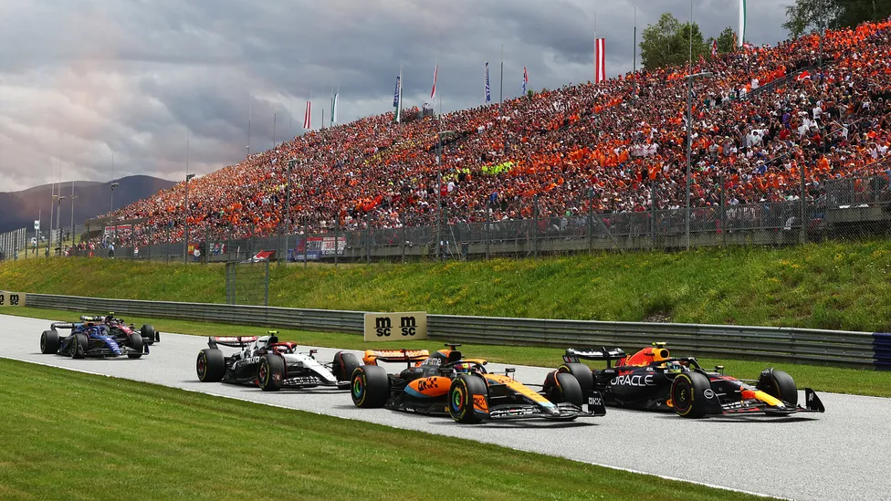
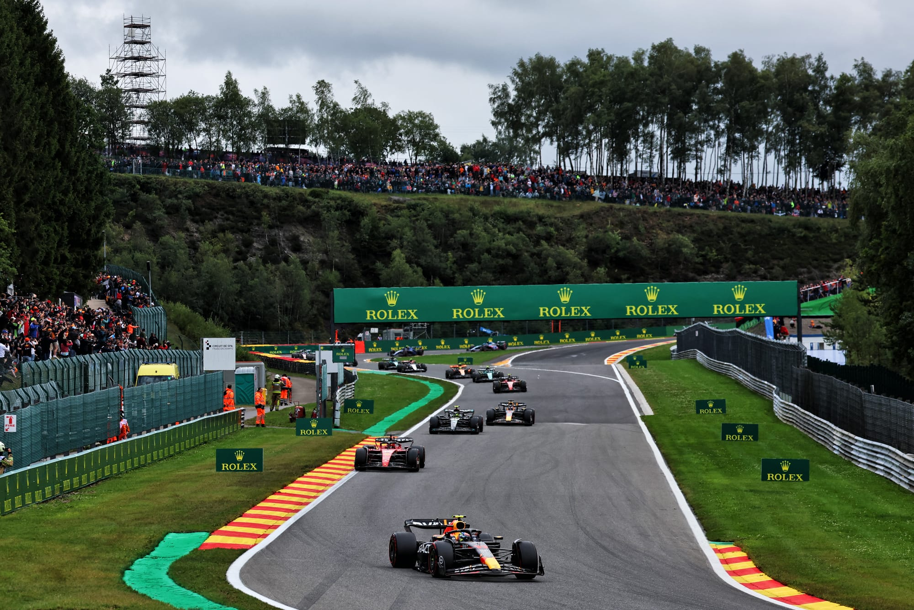
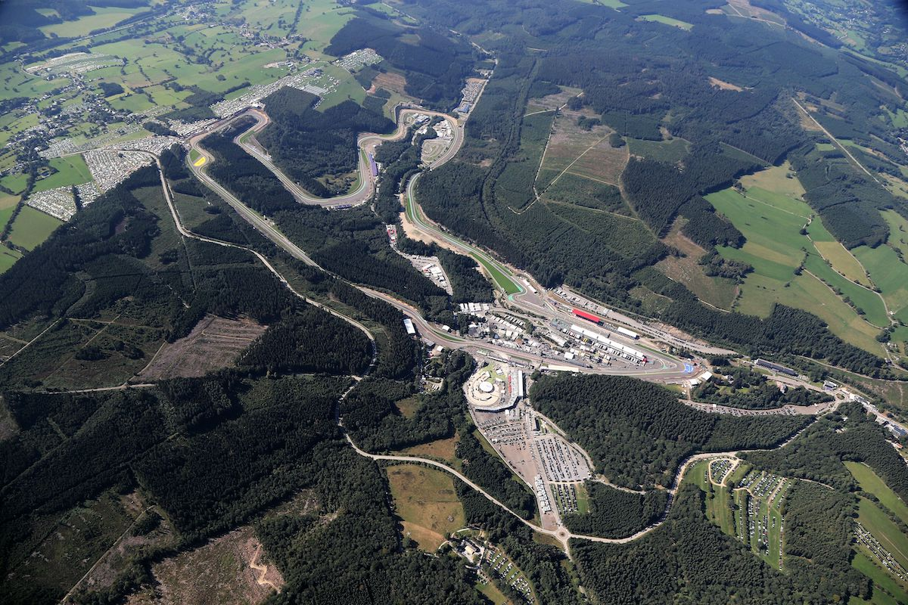
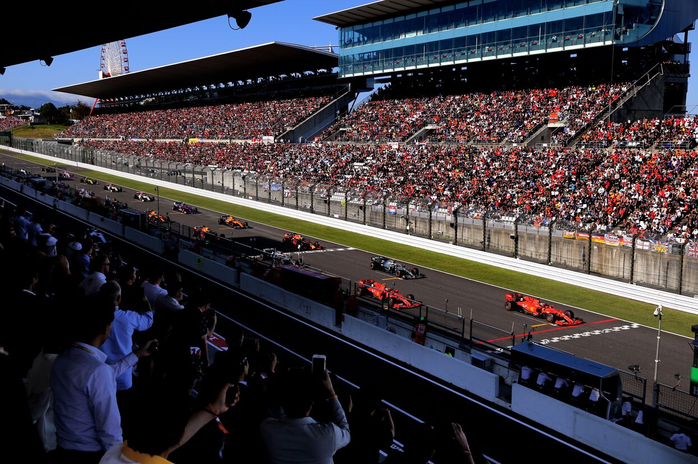
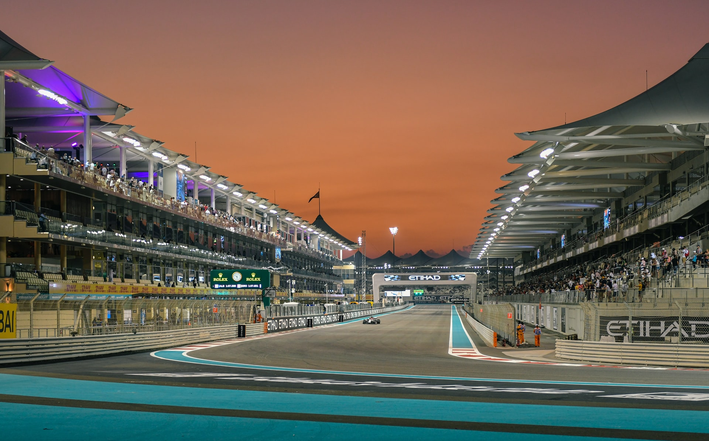

What is Formula 1?
Formula 1 is the highest class of international single-seater auto racing, sanctioned by the Fédération Internationale de l'Automobile (FIA). Teams of engineers, strategists, and two drivers compete across a season of Grands Prix held on circuits across six continents — from the narrow streets of Monaco to the high-speed desert of Bahrain.
Each car is an engineering masterpiece capable of generating more aerodynamic downforce than its own weight, reaching speeds beyond 350 km/h, and pulling over 5G of lateral force through high-speed corners. It is the fastest, most technically complex form of racing on Earth — and the most watched motorsport in history.
22
Races in 2026
11
Constructors fighting
350
Top Speed
75+
Years of History
F1 Vocabulary
Every sport has its own language. Master these terms and you'll feel right at home on the pit wall.
DRS
Drag Reduction System — a movable rear wing flap that cuts drag on straights to boost top speed.
Undercut
Pitting earlier than a rival to gain track position through fresher tyre pace on the in and out-laps.
ERS
Energy Recovery System — harvests kinetic and heat energy under braking, deploying short bursts of extra power.
Dirty Air
Turbulent airflow behind a leading car that disrupts a following car's aerodynamics, reducing downforce.
Parc Fermé
A restricted zone where no car setup changes may be made after qualifying ends.
Marbles
Rubber debris that builds up off the racing line, creating a slippery surface for cars that run wide.
Ground Effect
Aerodynamic principle where shaped underbody tunnels generate high downforce without large drag penalties.
Safety Car
A pace car deployed during hazardous conditions, forcing all drivers to bunch up behind it on track.
Delta Time
The time difference between a driver and a reference lap, used to manage gaps and comply with VSC rules.
DRS
Drag Reduction System — a movable rear wing flap that cuts drag on straights to boost top speed.
Undercut
Pitting earlier than a rival to gain track position through fresher tyre pace on the in and out-laps.
ERS
Energy Recovery System — harvests kinetic and heat energy under braking, deploying short bursts of extra power.
Dirty Air
Turbulent airflow behind a leading car that disrupts a following car's aerodynamics, reducing downforce.
Parc Fermé
A restricted zone where no car setup changes may be made after qualifying ends.
Marbles
Rubber debris that builds up off the racing line, creating a slippery surface for cars that run wide.
Ground Effect
Aerodynamic principle where shaped underbody tunnels generate high downforce without large drag penalties.
Safety Car
A pace car deployed during hazardous conditions, forcing all drivers to bunch up behind it on track.
Delta Time
The time difference between a driver and a reference lap, used to manage gaps and comply with VSC rules.
Overcut
Staying out longer than a rival before pitting, hoping to emerge ahead after their slower in and out-laps.
Graining
Small chunks of rubber torn from the tyre surface, causing vibration and a short-lived drop in grip.
Blistering
Heat damage deep within the tyre compound creating bubbles that rapidly destroy performance.
Porpoising
Aerodynamic bouncing caused by ground-effect cars repeatedly stalling and reattaching airflow beneath the floor.
VSC
Virtual Safety Car — drivers slow to a set delta without a physical safety car entering the track.
Oversteer
When the rear tyres lose grip before the fronts, causing the tail to step out — can result in a spin.
Understeer
When the front tyres lose grip before the rears, causing the car to push wide and miss the apex.
Formation Lap
The slow lap before the race start where drivers warm tyres and brakes before taking their grid positions.
Pit Wall
The team's trackside operations centre where engineers and the team principal monitor the race and call strategy.
Fuel Load
The amount of fuel carried at race start. Heavier loads slow the car early but are required to finish.
Overcut
Staying out longer than a rival before pitting, hoping to emerge ahead after their slower in and out-laps.
Graining
Small chunks of rubber torn from the tyre surface, causing vibration and a short-lived drop in grip.
Blistering
Heat damage deep within the tyre compound creating bubbles that rapidly destroy performance.
Porpoising
Aerodynamic bouncing caused by ground-effect cars repeatedly stalling and reattaching airflow beneath the floor.
VSC
Virtual Safety Car — drivers slow to a set delta without a physical safety car entering the track.
Oversteer
When the rear tyres lose grip before the fronts, causing the tail to step out — can result in a spin.
Understeer
When the front tyres lose grip before the rears, causing the car to push wide and miss the apex.
Formation Lap
The slow lap before the race start where drivers warm tyres and brakes before taking their grid positions.
Pit Wall
The team's trackside operations centre where engineers and the team principal monitor the race and call strategy.
Fuel Load
The amount of fuel carried at race start. Heavier loads slow the car early but are required to finish.
2026 Constructors' Championship
After Monaco Grand Prix
Pos
Constructor
Points
1
Mercedes-AMG
244
2
Scuderia Ferrari
165
3
McLaren
115
4
Red Bull Racing
73
5
Alpine
36
6
Racing Bulls
26
7
Haas F1 Team
19
8
Williams
7
9
Audi
2
10
Aston Martin
1
11
Cadillac
0
Famous Grand Prix Circuits

Monaco
Circuit de Monaco
The ultimate test of precision. This is a tight, twisting street circuit lined with unforgiving barriers, leaving zero room for error. While overtaking is incredibly difficult, winning here is considered one of the most prestigious achievements in racing. It represents the glitz, glamour, and historical heart of Formula 1.

Austria
Red Bull Ring
Nestled in the scenic Styrian mountains, this track is short, incredibly fast, and features dramatic elevation changes. It only has 10 corners, meaning the lap times are incredibly quick. It is famous for its heavy braking zones and great overtaking spots, all surrounded by beautiful green hills.

Belgium
Circuit de Spa-
Francorchamps
Frequently voted a favorite by drivers, Spa is the longest track on the F1 calendar. It cuts through the Ardennes forest and is legendary for its unpredictable weather (it can rain on one side of the track while staying dry on the other). It features Eau Rouge and Raidillon, one of the most famous and thrilling uphill corner sequences in all of motorsport.

Italy
Autodromo Nazionale Monza
Known as the "Temple of Speed," Monza is the fastest track on the calendar. Drivers are at full throttle for roughly 80% of the lap, flying down massive straights before slamming on the brakes for tight chicanes. It is also famous for the Tifosi—the hyper-passionate Ferrari fans who turn the grandstands into a sea of red.

United Kingdom
Silverstone Circuit
Built on a former World War II airfield, Silverstone hosted the very first official Formula 1 World Championship race in 1950. It is a high-speed, flowing track that tests a car's aerodynamic downforce. The iconic corner combination of Maggotts, Becketts, and Chapel is one of the ultimate tests of an F1 driver's skill and bravery.

Japan
Suzuka Circuit
Suzuka is unique because it is the only track on the F1 calendar designed in a "figure-eight" layout, featuring a bridge where the track crosses over itself. It is highly technical, featuring the famous "S" Curves and the ultra-fast 130R corner. It has been the backdrop for many dramatic championship-deciding moments over the decades.

United Arab Emirates
Yas Marina Circuit
Famous for hosting the season finale, this is a glittering, ultra-modern facility built on a man-made island. It features a unique pit-lane exit that tunnels under the track and passes right underneath the stunning, color-shifting W Abu Dhabi hotel.
Yas Marina
UAE
Suzuka
Japan
Silverstone
United Kingdom
Monza
Italy
Spa-Francorchamps
Belgium
Red Bull Ring
Austria
Monaco
Circuit de Monaco